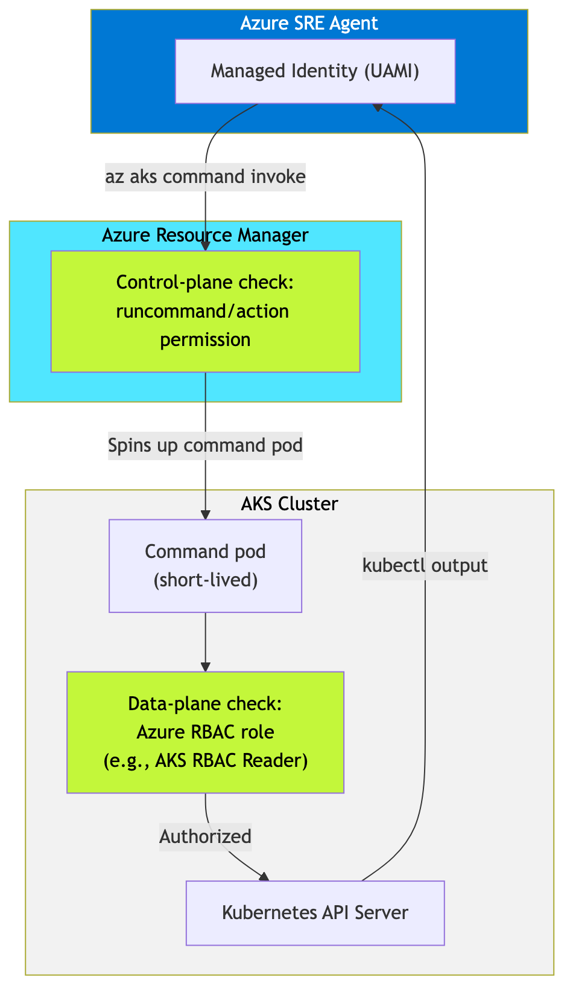

Author: Arturo Quiroga, Azure AI Services Engineer - Americas Enterprise Partner Solutions (AEPS) - Partner Solutions Architect (PSA)
Enterprise SRE teams typically operate in environments where their clusters are completely private, have disabled local accounts, they enforce Azure RBAC for Kubernetes authorization, restrict API server access with authorized IP ranges, and run nodes inside VNet subnets with strict network policies. Diagnosing and mitigating incidents on these clusters — reading pod status, inspecting events, viewing logs, and sometimes applying fixes — requires the SRE Agent to authenticate through multiple layers.
This post covers what we learned deploying Azure SRE Agent against hardened AKS clusters: the dual-layer authorization model, the exact role assignments needed for both read and write operations, and the gotchas that tripped us up along the way. These findings come from reproducing a real enterprise cluster configuration in a testbed environment and systematically resolving every Forbidden error we encountered.
Enterprise AKS clusters exist on a spectrum from open to fully locked. The table below shows how each configuration affects SRE Agent access:
| Configuration | API server access | SRE Agent access | Works? |
|---|---|---|---|
| Public (defaults) | Open | Direct or command invoke | Yes |
| Public + authorized IPs | IP-restricted | Command invoke (ARM bypass) | Yes |
| Public + Azure RBAC + no local accounts | Azure RBAC only | Command invoke + dual-layer roles | Yes (with correct roles) |
| Private (private endpoint) | VNet only | Command invoke (ARM bypass) | Yes |
| Private + Azure RBAC + authorized IPs | Fully locked | Command invoke + dual-layer roles | Yes (with correct roles) |
Figure 1: The AKS security spectrum. SRE Agent can reach any cluster through command invoke. The challenge is always authorization, not connectivity.
The pattern is consistent: az aks command invoke through
the ARM layer provides access across these configurations. This post
focuses on the “with correct roles” part — which is where most teams get
stuck.
Azure SRE Agent doesn’t connect directly to the Kubernetes API
server. It uses az aks command invoke, which routes through
the Azure Resource Manager (ARM) layer. ARM spins up a short-lived
command pod inside the cluster, runs your kubectl command, and returns
the output.
This architecture is significant for two reasons:
Network restrictions on the API server don’t block ARM-based access. Authorized IP ranges, private endpoints, and NSG rules restrict direct API server connections, but ARM API calls follow a separate path. The SRE Agent can reach your cluster through ARM even when direct kubectl access from your workstation is blocked.
Authorization happens at two layers, not one.
ARM checks whether the identity has permission to call
runCommand/action (control plane). Then the Kubernetes API
server checks whether that identity has data-plane access via Azure RBAC
roles. Both checks must pass.

Figure 2. Dual-layer authorization flow for SRE Agent on hardened AKS clusters. The ARM layer validates control-plane permissions, then the Kubernetes API server validates data-plane permissions.
flowchart TB
subgraph agent["Azure SRE Agent"]
MI["Managed Identity (UAMI)"]
end
subgraph arm["Azure Resource Manager"]
ARM_CHECK["Control-plane check:<br/>runcommand/action permission"]
end
subgraph cluster["AKS Cluster"]
CMD["Command pod<br/>(short-lived)"]
K8S_CHECK["Data-plane check:<br/>Azure RBAC role<br/>(e.g., AKS RBAC Reader)"]
K8S_API["Kubernetes API Server"]
end
MI -->|"az aks command invoke"| ARM_CHECK
ARM_CHECK -->|"Spins up command pod"| CMD
CMD --> K8S_CHECK
K8S_CHECK -->|"Authorized"| K8S_API
K8S_API -->|"kubectl output"| MI
style agent fill:#0078D4,color:#fff
style arm fill:#50E6FF,color:#000
style cluster fill:#F2F2F2,color:#000
style ARM_CHECK fill:#C3F73A,color:#000
style K8S_CHECK fill:#C3F73A,color:#000If either layer is missing, kubectl returns
Forbidden — even for the subscription Owner.
Through testing on a cluster configured with
disableLocalAccounts: true and
enableAzureRBAC: true, we identified the minimum role set
for read-only SRE access:
| # | Role | Type | Scope | Purpose |
|---|---|---|---|---|
| 1 | Reader | Built-in | Resource group | ARM metadata reads (az aks show, resource listing) |
| 2 | AKS ReadOnly Command Invoke | Custom (4 actions) | AKS cluster | Grants runCommand/action at the ARM layer |
| 3 | Log Analytics Reader | Built-in | Log Analytics workspace | Query container logs via KQL |
| 4 | AKS RBAC Reader | Built-in | AKS cluster | Kubernetes data-plane reads (get pods,
describe, get nodes) |
The custom role contains exactly four actions — nothing more:
{
"actions": [
"Microsoft.ContainerService/managedClusters/read",
"Microsoft.ContainerService/managedClusters/listClusterUserCredential/action",
"Microsoft.ContainerService/managedClusters/runcommand/action",
"Microsoft.ContainerService/managedClusters/commandResults/read"
],
"dataActions": [],
"notActions": [],
"notDataActions": []
}Figure 3: The custom role definition for least-privilege command invoke access.
This is a least-privilege pattern. The SRE Agent can observe your cluster without permission to modify resources through the assigned roles.
To verify the assignments are in place, query by the agent’s managed identity object ID and filter to the cluster’s resource group. We use the CLI here rather than the Azure Portal because — as covered in Gotcha 2 below — the Portal’s Check access panel may show zero assignments even when the roles are correctly configured and working:
az role assignment list \
--assignee-object-id $MI_OBJECT_ID --all \
--query "[?contains(scope, '<your-rg>')].{Role:roleDefinitionName, Scope:scope}" \
-o tableFigure 4. CLI output showing the four role assignments on the SRE Agent’s managed identity, scoped to the locked-down AKS resource group: Reader, AKS ReadOnly Command Invoke, Azure Kubernetes Service RBAC Reader, and Log Analytics Reader.
Common mistake: The built-in
Azure Kubernetes Service Cluster User Roledoes not includeruncommand/action. It only grantslistClusterUserCredential/action, which is foraz aks get-credentials— useless on a cluster with local accounts disabled. If the SRE Agent recommends this role, override it.
When enableAzureRBAC: true and
disableLocalAccounts: true, the cluster uses Azure role
assignments for all Kubernetes authorization. No Azure RBAC data-plane
role means no access — for anyone.
This catches teams off guard because subscription Owners have full
ARM access but no Kubernetes data-plane access by default. The first
kubectl get pods after enabling Azure RBAC returns
this:
User "admin@contoso.com" cannot get resource "namespaces"
in API group "" in the namespace "default":
User does not have access to the resource in Azure.
Update role assignment to allow access.
Figure 5. The Forbidden error returned when Azure RBAC is enabled but no data-plane role is assigned. This error appears even for subscription Owners.
Fix: Assign AKS RBAC Reader (or
AKS RBAC Cluster Admin for full access) to the identity at
the AKS cluster scope. This applies to each user and managed identity
that needs cluster access — including the SRE Agent.
Azure managed identities have two identifiers:
| Identifier | Example | Where it appears |
|---|---|---|
| App (Client) ID | 5ef3d54d-b401-... |
Token claims, az login --identity output |
| SP Object (Principal) ID | f54ae888-64d7-... |
Portal identity panels, Microsoft Entra ID |
Both identifiers resolve correctly at runtime —
az role assignment create --assignee and
az role assignment list --assignee --all accept either one
and return identical results. The CLI handles the translation
transparently.
The trap is the Azure Portal. When you open your AKS cluster’s Access control (IAM) > Check access, select “Managed identity,” and pick the SRE Agent identity, the panel shows Role assignments (0). Zero. This is alarming — your agent is working, but the portal says it has no permissions.
What happens: the Check access panel resolves the identity by its
display name and matches it to the principal ID. If the
role assignments were originally created using the client
ID (which
az role assignment create --assignee <client-id> does
by default), the portal’s identity lookup follows a different resolution
path and fails to surface the assignments.
The roles are there. The agent works. But the portal says otherwise.
Verification: Use the CLI to query by scope instead of by identity — this reliably returns the current assignments:
# Shows ALL role assignments on the cluster, regardless of how they were created
az role assignment list \
--scope "/subscriptions/<sub>/resourceGroups/<rg>/providers/Microsoft.ContainerService/managedClusters/<cluster>" \
-o tableTip: If you want the Portal Check access panel to work correctly, create role assignments using the principal (object) ID rather than the client ID. You can find it with
az identity show --name <name> --resource-group <rg> --query principalId -o tsv.
The built-in AKS RBAC Reader role covers 30+ data
actions — get pods, get nodes,
get services, describe — but does
not include:
Microsoft.ContainerService/managedClusters/pods/log/readSo kubectl get pods works,
kubectl describe pod works, but
kubectl logs <pod> returns
Forbidden.
Fix: If your SRE Agent needs log access for root cause analysis, either:
pods/log/read to the custom role’s
dataActions array, orAKS RBAC Writer (which includes log reads but
also grants create/update — broader than ideal)To validate that az aks command invoke takes a different
network path than direct kubectl access, we enabled authorized IP ranges
on our test cluster with CIDRs that explicitly excluded our own
IP address:
az aks update -g rg-sre-locked -n aks-cluster \
--api-server-authorized-ip-ranges "52.103.144.0/24,40.97.73.0/25"With our IP blocked from the API server, we deployed a full workload through command invoke:
az aks command invoke \
--resource-group rg-sre-locked \
--name aks-cluster \
--command "kubectl apply -f deployment.yaml" \
--file deployment.yamlResult: namespace created, deployment applied, two pods running — all through the ARM layer with no direct API server access.

Figure 6. Successful kubectl output through command invoke with our IP blocked by authorized IP ranges. Command invoke follows the ARM path, which is not affected by API server IP restrictions.
This confirms that az aks command invoke through ARM
provides a working access path for clusters with IP restrictions, VNet
injection, or private endpoint configurations.
For teams setting up SRE Agent on a hardened cluster, here’s the exact sequence:
# 1. Get the SRE Agent's managed identity Object ID
MI_OBJECT_ID=$(az ad sp show --id <agent-app-id> --query id -o tsv)
# 2. Get resource IDs
AKS_ID=$(az aks show -g <rg> -n <cluster> --query id -o tsv)
RG_ID=$(az group show -n <rg> --query id -o tsv)
LA_ID=$(az monitor log-analytics workspace show \
-g <rg> -n <workspace> --query id -o tsv)
# 3. Assign the four roles
az role assignment create --assignee-object-id $MI_OBJECT_ID \
--role "Reader" --scope $RG_ID
az role assignment create --assignee-object-id $MI_OBJECT_ID \
--role "<custom-role-id>" --scope $AKS_ID
az role assignment create --assignee-object-id $MI_OBJECT_ID \
--role "Log Analytics Reader" --scope $LA_ID
az role assignment create --assignee-object-id $MI_OBJECT_ID \
--role "Azure Kubernetes Service RBAC Reader" --scope $AKS_ID
# 4. Verify — always use --assignee-object-id, not --assignee
az role assignment list --assignee-object-id $MI_OBJECT_ID --all \
--query "[].{role:roleDefinitionName, scope:scope}" -o tableFigure 7: Complete role assignment script. Replace placeholders with your resource names and IDs.
With the four-role pattern in place, the SRE Agent can perform the core incident investigation workflow:
| Capability | kubectl command | Status |
|---|---|---|
| List pods, services, deployments | kubectl get pods -n <ns> |
Supported |
| Describe resources | kubectl describe pod <name> |
Supported |
| Check node status | kubectl get nodes |
Supported |
| Read Kubernetes events | kubectl get events |
Supported |
| Query container logs (KQL) | Via Log Analytics connector | Supported |
| Inspect network policies | kubectl get networkpolicies |
Supported |
| Read pod logs | kubectl logs <pod> |
Requires additional pods/log/read dataAction |
| Modify resources | — | Blocked by design (read-only) |
This covers incident investigation, health checks, and root cause analysis — the core SRE Agent use cases.
The az aks command invoke path works well for AKS
clusters because ARM can route commands to the cluster’s control plane
regardless of network restrictions. However, there are boundaries to be
aware of:
AKS command invoke is control-plane only. The SRE agent uses ARM to reach the Kubernetes API server, which handles kubectl operations. If a remediation action requires data-plane API calls to resources behind a private endpoint — such as a database, storage account, or internal service running inside the VNet — ARM cannot reach those endpoints. Those operations require the agent itself to have private endpoint connectivity, which is not yet supported.
Other Azure compute services have different access models. This post focuses on AKS, but enterprise teams also lock down Azure Container Apps (ACA) and Azure App Service with VNet integration, internal-only ingress, and private endpoints. While ARM-based management operations (restart, configuration, scaling) work similarly, data-plane operations like log streaming, console exec, and Kudu access may be blocked when private endpoints are enabled. We plan to test and document these scenarios in a follow-up post.
Private endpoint support is on the roadmap. Until the SRE Agent supports connecting through private endpoints, the workarounds described in this post apply only to control-plane operations routed through ARM. For fully private environments where all resources are behind private endpoints, some agent capabilities will be unavailable.
We built these findings while deploying Azure SRE Agent in a real enterprise environment with production-grade security constraints. If you encounter additional gotchas or have questions about specific AKS configurations, reach out through:
Azure SRE Agent is generally available. If you’re running hardened AKS clusters, the four-role setup described here gets your agent productive in minutes.
Special thanks to Deepthi Chelupati for the SRE Agent guidance.